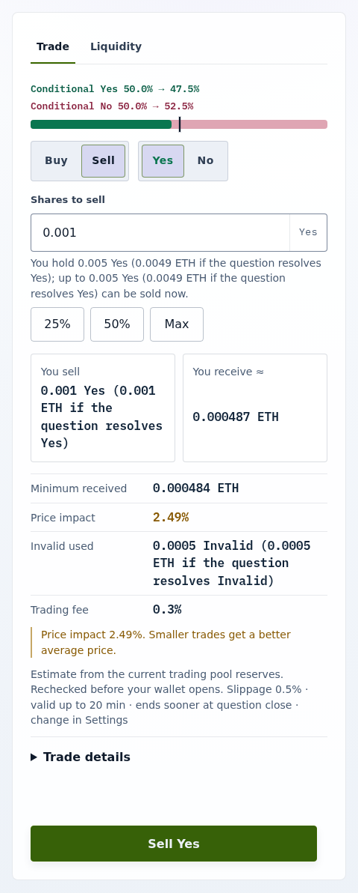

How-to guide
Exit an insured position
Use this guide to turn Yes or No shares back into ETH before the market resolves, without spending more Invalid insurance than you hold.
Exit in the UI
- Open the market, select Sell and the side you hold.
- Select Max to fill Shares to sell with the largest amount you can sell now, or enter a smaller amount. The hint under the field shows your holding and that limit.
- Check You receive ≈, Minimum received, and Invalid used, then select Sell Yes (or Sell No) and confirm.

If Invalid is the binding limit and you enter more than it covers, the ticket shows Not enough Invalid shares to insure this sale. and offers Sell … instead with the largest amount. The shares you do not sell stay in your wallet. Acquiring more Invalid helps only when Invalid is the binding limit; Why early ETH exits are limited works through the bounds.
Exit through the SDK
- Call the SDK's
maximumInsuredExitwith your wallet balances and the pool's reserves. It returns the largest number of complete setsqthat your Invalid, your long shares, and the opposite reserve all allow. For a Yes position,qcomplete sets needqInvalid,qYes to redeem, and enough extra Yes to buy exactlyqNo. - Choose
maxLongSharesIn,minEthOut,payoutRecipient,refundRecipient, anddeadlineexplicitly, and encode the request withencodeReceiveRequest. - Send a ShareToken
safeBatchTransferFromto the router carryingqInvalid andmaxLongSharesInlong shares with the encoded request. Simulate it, simulate again immediately before submission, and submit only if the result still satisfiesmaxLongSharesInandminEthOut.
The router reference lists the request fields and what the router returns.